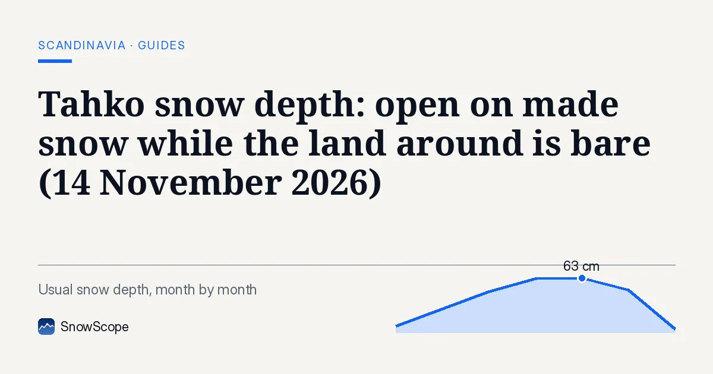

Tahko snow depth: open on made snow while the land around is bare (14 November 2026)
Tahko began its season on 13 November with two lifts running and an opening festival through 15 November. All the snow on the slopes is made snow; the landscape outside the pistes stays bare. Early-season conditions are tough: natural snow keeps vanishing, and this week's forecast mixes rain with whatever powder falls.
See the live snow forecast for Tahko in the SnowScope appSnow depth, powder alerts and the 3D map, free.

Why Tahko can open while the forest is brown
On 12 November, stations near Tahko recorded fresh snow: Kuopio Maaninka had 4 cm, Rautavaara Ylä-Luosta 3 cm. By 13 November both read 0 cm. This is the early-season pattern. Snow falls but melts fast because the ground is still warm and the air does not stay cold enough to hold it.
In the last seven days, about 7 cm fell across the region, but very little remains on the ground outside the managed slopes. That is why ski resorts in Finland rely on snowmaking in November. Tahko builds its first runs on cold nights, turning water into the only reliable base right now.

What the next seven days will bring
SnowScope forecasts about 8 cm at the base and 7 to 8 cm at the top over the next week. The issue is not the amount but the mix. The snow line sits around 90 m, just below Tahko's base at 97 m. That means rain will fall at the lower slopes and wet snow higher up.
More than half the water at the base may arrive as rain; at the top, about a third. This is not powder-building weather. Any snow that lands will settle fast and compact, turning to crust if it freezes overnight or turning to slush if the sun returns.
How this compares with past Novembers
Tahko's history spans 46 winters. On this date (14 November), the usual natural depth is 6 cm. By the end of November that grows to 15 cm. By mid-December it reaches 25 cm. These are medians: in roughly one winter in eight, there is no snow at all on 14 November.
Last winter was weak. It peaked at only 42 cm and kept snow for 131 days, well short of the typical 182 snow days. This year is following the same early lean spell, though it is still far too early to call the season.
What runs are open now
The resort's homepage on 13 November listed 2 of 14 lifts open, serving runs made entirely from snowmaking. Expansion depends on cold nights—and the forecast does not offer many. With rain in the picture, more snowmaking will be slow.
Tahko's opening runs are hard and smooth early in the day, then soften if afternoon temperatures rise above 0 °C. If rain falls, they become sticky. Forest trails and off-piste terrain have no base and will not be safe this week.
When conditions might improve
The pattern should shift in late November. By 21 November, Tahko's history shows 10 cm is typical; by 30 November, 15 cm. Mid-March is usually the deepest month, with a median depth around 63 cm. That is still six weeks away.
The key question is whether December brings sustained cold. If it does, snow will stick and build. For now, Tahko's opening gives early-season skiers a chance to run on made snow in what is still largely a bare landscape.
Tips for skiers
- Bring sharp edges and tune your base before you go. Made snow is hard and fast in cold mornings, loose in warm afternoons. Wet snow demands edge grip.
- Do not venture onto forest trails or off-piste this week. There is no foundation. Rocks lie under any thin patches of natural snow.
- Check the resort's homepage on the morning you plan to visit. The number of open lifts changes quickly when snowmaking competes with rain.
- Bring waterproof layers. Rain at the base and wet snow at mid-slope mean you will get soaked if you stay out all day.
- If you ski off-piste in the coming weeks, check the official avalanche bulletin from EAWS (European Avalanche Warning Services) at avalanches.org, even though early-season slides are rare in Kainuu.
About these numbers
Resort snow depths are the deepest snow on the resort's upper slopes on the date shown; they are estimates for an area, not a measurement at one point. Forecasts can change. Always read the official avalanche bulletin before going off-piste.
Official avalanche bulletins: EAWS – European Avalanche Warning Services
Cite this report
For research, teaching or the press: the numbers and charts are free to reuse under CC BY 4.0 with this citation.
SnowScope (2026), Tahko snow depth: open on made snow while the land around is bare (14 November 2026), https://snowscope.app/blog/en/2026/11/tahko-snow-depth-14-november-2026.html, accessed 2026-11-14
SnowScope (Atlas Labs). (2026, November 14). Tahko snow depth: open on made snow while the land around is bare (14 November 2026). SnowScope snow reports. https://snowscope.app/blog/en/2026/11/tahko-snow-depth-14-november-2026.html
BibTeX
@misc{snowscope2026tahkosnowdepth14november,
author = {{SnowScope (Atlas Labs)}},
title = {Tahko snow depth: open on made snow while the land around is bare (14 November 2026)},
year = {2026},
month = nov,
howpublished = {\url{https://snowscope.app/blog/en/2026/11/tahko-snow-depth-14-november-2026.html}},
note = {Published 2026-11-14 20:11 UTC; accessed 2026-11-14}
}· CC BY 4.0 · Methods, data and tools →
Tahko: snow and temperature by height, this winter vs last (tools) →
Follow Tahko
Free: a message when fresh snow is coming, and the forecast every morning.
More snow reports

Kiruna town has 0 cm of snow on 13 November. Dog-sledding operators work around thin early-season snow. What to know about tours and local rules.

Helsinki has no snow on 14 November, but plenty of dog parks and forests. Snow usually arrives around 20 November.

Göteborg has 0 cm of snow on 14 November. The weekend is mild. November's leash rules are relaxed: explore parks and forests with your dog.